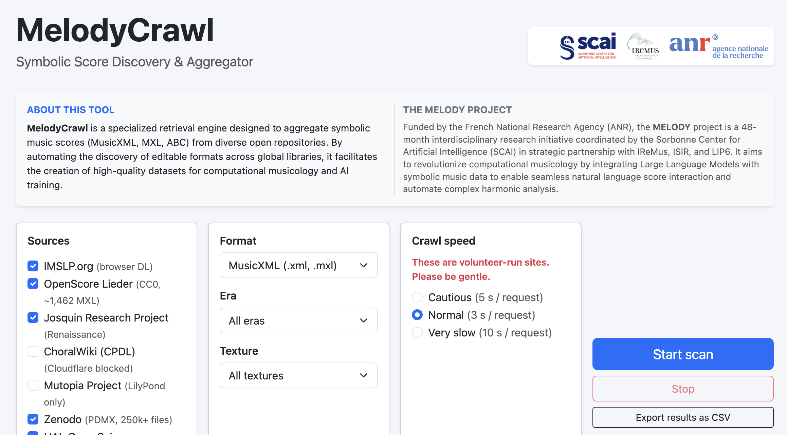
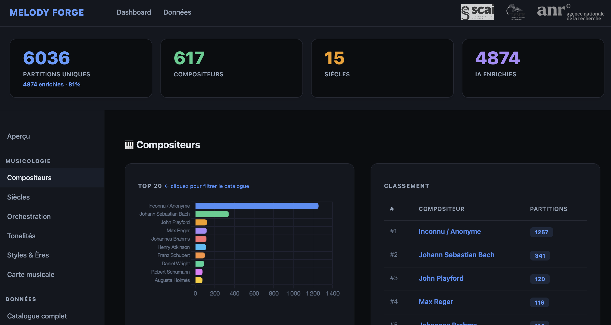

Current data status
HARMONIA
A 100-record OpenScore Lieder exemplar is public on Zenodo. The full HARMONIA v0.1 corpus remains under rights, metadata, duplicate, and format-validation review.
- Repository prospecting implemented
- HARMONIA 100-record exemplar deposited
- Forge hand-off and normalization in progress
- Rights, metadata, and duplicate gates remain open
- Production MNX export and validation remain planned
Digital Verdi
Corpus documentation & source criticism
A dataset report and a companion musicology/DH article were prepared for coauthor review in September. Both examine the construction and limits of the working Verdi collection; neither is submitted. Release permissions and publication venues remain to be agreed.
Critical path
- Freeze a rights-cleared v0.1 slice
- Connect Crawl manifests to Forge
- Validate experimental MNX companions
- Resolve cross-source duplicate families
- Publish frozen manifests and documentation
Open & FAIR policy
The public dataset is limited to scores whose terms permit redistribution and reuse. Public availability alone is not treated as an open licence.
- Findable: stable IDs, versioned manifests, searchable metadata.
- Accessible: open protocols and persistent metadata.
- Interoperable: preserved source files, MusicXML, and documented experimental MNX derivatives.
- Reusable: record-level rights, source URI, hashes, and conversion lineage.
Licence boundary: public-domain, CC0, CC BY, CC BY-SA, or equivalent reviewed terms may enter the open release. Non-commercial-only material, if retained, stays in a separate labelled research partition and is not described as open data.
Development Log
Autumn research update
Current work brings together corpus documentation, controlled symbolic-music generation and the critical study of digital scores. The public HARMONIA exemplar contains 100 OpenScore Lieder records; a larger working collection is still being curated and is not a released corpus.
- HARMONIA–NotaGen: a controlled adaptation protocol uses a frozen 1,384-record research manifest with work-family splits. An 18-record conversion pilot preserved the tested pitch, timing and structural properties, with notation warnings in nine records. Full validation and baseline checks remain; no HARMONIA–NotaGen checkpoint or model-quality improvement is claimed.
- Score Chat: a local prototype explores score generation, inspection and revision using an external NotaGen-X worker. Runtime enablement and reproducible evaluation remain prerequisites for a public service.
- Structured representations: an AST-based representation-learning study was registered on 27 October. It is a planned comparison, with data and grammar checks preceding training.
Earlier entries below document experiments at their original dates. They do not establish current model availability or a public service.
Rights-aware discovery and the HARMONIA release pipeline
We implemented a multi-format repository prospecting layer in MelodyCrawl and clarified the ownership of each stage: Crawl discovers and records evidence; Forge normalizes accepted scores and produces derived formats; HARMONIA assigns stable identities, resolves duplicates, and publishes versioned releases.
A bounded seed review found 806 extension-normalized path identities across five high-priority repositories. This includes 244 OpenScore String Quartet paths representing 122 score identities in two formats, plus nine pinned upstream corpora exposed by a DCML meta-repository. These figures are discovery leads—not imported HARMONIA records, not unique-work totals, and not a claim of exhaustive GitHub coverage. The broader scan was also constrained by the unauthenticated GitHub API quota.
Duplicate control is staged: byte hashes catch exact copies, normalized musical fingerprints catch format or serialization variants, and work-level clusters are reviewed before release. Human-readable filenames follow CENTURY_COMPOSER_WORK[_CATALOGUE] when the required metadata is known; stable record IDs remain independent of filenames.
MNX is a first-class target for a companion copy of each supported, accepted score, while the original file and MusicXML interchange representation are preserved. Because the official MNX 1.0 document is still a draft, generated MNX will be labelled experimental, tied to a pinned specification/converter version, schema-checked, and subjected to semantic round-trip tests before release.
Publication package
- a published 100-record HARMONIA exemplar payload release with source files, normalized MusicXML, derived formats, checksums, manifest, and clearance workbook;
- a broader HARMONIA v0.1 release under curation, with record-level rights evidence, provenance, duplicate review, and licence inventory;
- a technical report accompanied by a reproducible Jupyter notebook and data visualizations; and
- a full-length information-science article, subject to venue confirmation and completion of the audited release materials.
Application scope: the companion music application is planned around external symbolic-music models only, with an initial compatibility target of five or six adapters. A model is not advertised as supported until its licence, interface, notation format, and local resource requirements have been tested.
Melody-SLM P2: Augmented Pretraining Launched
After fixing an augmentation pipeline bug (the previous transpose_abc wrote music21 object representations instead of valid ABC), we launched a key-aware transposition run for the [r:N/M][V:k] dialect used in the working corpus. The run expanded 15,133 source records to 181,486 training records (approximately 360M tokens). Transposed records include source title, original key, transposition offset, and a provenance header intended to support traceability. The 50M-parameter Melody-SLM P2 training run was launched on Eurasia with a 2,048-token context and bfloat16. These are dated run records, not a current training-status claim or a public HARMONIA release.
Molière ex Machina: AI-Driven 17th Century Music Premiere
The MELODY project team contributed generative-music work to Molière ex Machina, an AI-assisted theatre project developed with Obvious and Hugo Caselles-Dupré. The collaboration explored historically informed musical generation for a seventeenth-century theatrical setting.
MelodyCrawl: symbolic-score discovery prototype
Built the first working MelodyCrawl interface for discovering editable symbolic scores and recording their source evidence. The current repository prospecting layer recognizes MusicXML/MXL, MuseScore, Humdrum/Kern, MEI, ABC, and LilyPond candidates. Discovery does not establish licence compatibility, tonal/polyphonic suitability, metadata quality, or uniqueness: every candidate must pass explicit review and Forge validation before it can enter HARMONIA. Some source adapters remain experimental or review-only.

Reasoning-Aware Pivot & Evaluation Benchmarks
Session 21 evaluated stylistic models and began experiments with Reasoning-Aware Generative Fine-Tuning (R-GFT). An internal diagnostic of the ZR1 v3 data identified corruption; 880 examples were regenerated before the sequential training queue was relaunched on Eurasia. We also started a reasoning-aware fine-tuning experiment for the Gemma track. In that internal evaluation setup, Phase D (Chord Tones) received the highest reported score, 72.9; the result has not yet been established as a general benchmark.
Structural consolidation: HARMONIA & MELODY Studio
The project architecture now treats HARMONIA as the canonical data layer and MELODY Studio (melodyapp) as the intended user-facing workspace. The HARMONIA roadmap includes authority links such as RISM and Polifonia identifiers where they can be resolved with evidence; comprehensive Linked Open Data coverage has not yet been established. Studio integration across generative, analytical, and philological tools is being developed incrementally.

Eurasia Status Update: Music Reasoning (ZR1) Training & Phase Completion
Conducted a comprehensive audit of the Eurasia server. (1) Music Reasoning (ZR1) is actively training (Epoch 3.75, 79% through current phase) with a high token accuracy of 99.2%. (2) Confirmed the successful completion of the Gemma-Renaissance LoRA adaptation and the NotaGen Phase 1.3 harmonic fine-tuning (best eval loss 0.0384). All models and adapters have been saved and are ready for the next phase of evaluation and integration into the multi-agent pipeline.
Verdi Studio: A Philological Workstation for Symbolic Music
Initiated the core development of Verdi Studio, a specialized tool within the MELODY-SUITE designed for the philological study of Giuseppe Verdi's output. The application focuses on three primary pillars: (1) PDF-to-Symbolic conversion to unlock archival materials; (2) a Manual Annotation Layer for musicological grounding; and (3) a Verdi-specific RAG for intelligent score retrieval. This work is supported by Anatole Huet's summer internship, dedicated to building and curating the foundational Verdi Symbolic Dataset.
The MELODY-SUITE Ecosystem
Formalized the MELODY-SUITE as a modular symbolic-music architecture. Its data path is now defined as melody-crawl (discovery and evidence) → melody-forge (normalization and conversion) → HARMONIA (canonical dataset and releases), with models and Studio consuming versioned outputs. The contracts between these components are still being implemented and tested; an end-to-end production pipeline is not yet claimed.
NotaGen Harmonic Fine-tuning & SCG Implementation
Launched Phase 1.3 of NotaGen training on Eurasia with %%COND tokens embedded across a 242-entry annotated corpus. Simultaneously implemented the Soft Constraint Guidance (SCG) gradient oracle loop for rule-guided diffusion.
VAE-Diff Re-training Completed
Successfully re-trained VAE (30 epochs) and Diffusion (100 epochs) on corrected tokens. Fixed a critical tokenization bug and KL loss stability issues identified in the previous audit.
Publications & manuscripts
Status reviewed against project records on 31 October 2026. Dataset and software deposits are distinguished from journal articles; manuscript statuses reflect the latest recorded editorial evidence.
HARMONIA exemplar
Version 1.0.0, published 2 September 2026: 100 OpenScore Lieder records with source files, derivatives and provenance documentation. This is an exemplar, not the full HARMONIA corpus.
Dataset DOIHARMONIA: data curation and provenance
The Journal of Documentation manuscript examines evidence and release decisions for symbolic scores. Author review and source-specific checks remain. The quality-control technical report is a separate output in preparation.
Digital Verdi
Two texts were prepared in September: a corpus/data report and a companion historical and source-critical article. Coauthor review, publication venues and the scope of any data release remain open.
The Graveyard of Notations
A revised manuscript on digital music encoding, format loss and preservation was prepared for Humanities on 30 October. It is a conceptual and documentary study; its synthetic examples are not a converter-performance benchmark.
Explainable AI for Cultural Heritage Music Corpora
IntechOpen invited a full chapter following proposal acceptance recorded in September. The full manuscript is due 4 December 2026 and still requires submission and review. The chapter itself is not yet accepted or published.
Related research · historical music lexicography
The Lexicon C19 work belongs to the wider musicology/DH portfolio and is listed separately from the core MELODY outputs.
- A Multilingual Corpus of Historical Music Lexicography from the Long Nineteenth Century — Data: accepted 18 September 2026 according to the received production proofs. Final article DOI and publication date are not yet confirmed in the project record.
- What historical music dictionaries become as data — Heritage: submitted; no acceptance recorded.
Research Repositories
HAL Open Science
View all on HALExploring PDMX as a Digital Humanities Observatory of Symbolic Music
Technical reporthal-05605863v1 · Deposited 28 April 2026 · Bibliographic date: March 2025
A Digital Humanities study of PDMX as a corpus for musicological observation and critical analysis.
High-Fidelity Music Notation Conversion Tools
Technical reporthal-05608868v1 · Deposited 1 May 2026
A technical report on tools for conversion between symbolic music notation formats.
melody-crawl Engine
Technical reportHAL hal-05704297 · Deposited: 2026-07-26
Symbolic-score discovery, source pinning, and evidence collection for the MELODY data pipeline.
Melody Forge: An Instruction-Tuning Factory for Symbolic Music LLMs
SoftwareHAL hal-05638223 · Deposited: 2026-05-29
Normalization, symbolic-format conversion, and instruction-data preparation for music-language-model work.
Redefining AutoML for the Digital Humanities
Reporthal-05610105v1 · Technical report
Zenodo Data & Artifacts
View all on ZenodoThese deposits provide datasets and research materials; their availability does not establish acceptance or publication of an associated journal article.